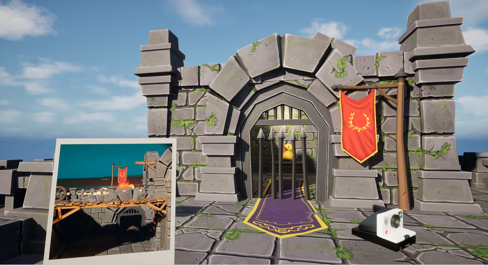

每张照片，独立画面。
Scene Capture 把画面写入独立 Render Target，避免不同照片互相覆盖。照片 Actor、二维画面和临时相机在同一次捕获流程内建立。
- 输入
- 拍摄相机姿态
- 输出
- 独立 Render Target
- 失败
- 照片不进入可用状态
- 证据
- Capture Photo
AC_Viewfinder / Capture Photo

可游玩技术垂直切片
《显影》是我使用 Unreal Engine 蓝图完成的短流程解谜项目。玩家把照片中的画面重新放回场景，生成可以行走的三维空间。
下面五段录屏按实际操作顺序展示拾取、旋转、显影、裁切和回撤。项目只有两个小关，但核心机制已经形成可游玩、可解释、可恢复的完整闭环。
拖动相片浏览，悬停时视频自动播放。
我把显影流程拆成六个连续阶段。展开任意一项，可以看到玩家操作、负责的蓝图、数据输入输出，以及失败时的清理方式。
Scene Capture 把画面写入独立 Render Target，避免不同照片互相覆盖。照片 Actor、二维画面和临时相机在同一次捕获流程内建立。
Transform、FOV、Aspect 和 Depth 被写入 PhotoInformation。只有二维画面和三维数据都完成，bPhotoDataReady 才打开。
Place Photo 读取 RotationStep × 90°，写入临时相机 Roll，再与原始拍摄旋转组合，复现玩家手中照片的观察视锥。
照片四边执行正向和反向 Trace，命中按 SourceActor 归并。真正的裁切只发生在 Working Copy，原对象保留可恢复状态。
裁切结果被重建为程序化网格，照片背景根据 Render Target、Depth、FOV 和 Transform 补齐远端画面。
成功分支封装 ST_PhotoUndoRecord；失败分支把所有 L_Pending 临时结果交给 Rollback Pending Photo Placement。
照片边缘存在空隙时，单向 Trace 可能越过前景，命中后方的另一个 Actor。系统如果不先区分来源，就可能把两块结构当成同一个对象裁切。
正向与反向命中合并后，Boundary 和 Inside 先按来源分类；破坏性操作推迟到 Working Copy 有效以后。
我没有把 R 做成视觉上的倒放。放置成功时，系统会记录照片、生成物、原场景状态和时间线事件；回撤时再按照这份记录逆序恢复。
点击 Place 查看记录如何提交，再点击 R 查看系统如何逆序恢复。
目前完成的是一个短流程、可游玩的技术垂直切片。重点不是关卡数量，而是核心机制能够运行、解释、测试，并在失败后恢复。